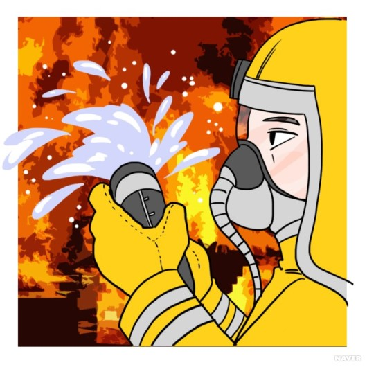

소방관은 화재를 예방하거나 진압한다. 사고나 재난 발생 시 긴급구조 및 구급출동 등 국가의 인명을 구조하고 재산을 보호한다. 화재 예방 활동으로 학교, 병원, 시장 등의 건축물 소방시설의 안전 점검을 하거나 건물 주변에 위험요소가 있는지 순찰한다. 화재가 발생했을 때 신속히 출동하여 화재를 진압하며, 소방용수 시설을 관리하여 소화 용수를 효과적으로 공급한다. 또 소방훈련을 통해 실제상황에 대비하기도 한다. 교통사고, 건물 붕괴 등의 사고가 발생했을 때 119구조대의 인명구조 활동, 위급한 환자와 장애인의 병원이송 활동, 각종 재해로 인한 피해 복구 등의 활동을 한다. 소방기구, 호스, 소화기 등의 각종 소방장비와 건물의 소방설비를 점검한다. 소방항공대는 소방헬기 등을 이용하여 인명구조, 화재진압, 응급환자 공중수송, 공중방역 및 방제 활동을 한다. 수난구조대는 강이나 호수에서 발생하는 각종 수난사고 발생 시 구조활동을한다.
소방관은 상황 대처 능력과 신속하게 일을 처리하는 능력이 필요하며 강한 체력이 있어야 한다. 자신보다 남을 귀중히 여기는 투철한 희생정신과 봉사정신이 필요하다. 비상시에 동료와 함께 단합하는 협동심이 요구되고, 소방차량 및 각종 진화장비에 대한 철저한 준비와 안전의식이 요구된다. 사회형과 현실형의 흥미를 가진 사람에게 적합하며, 남에 대한 배려, 협조심, 리더십 등의 성격을 가진 사람들에게 유리하다.
소방관이 되기 위해서는 소방공무원 채용시험이나 소방간부후보생 선발시험에 합격해야 한다. 소방공무원과 소방간부후보생 채용시험에 응시하기 위해서는 나이가 21세 이상 40세 이하여야하며, 운전면허 1종 보통이나 대형면허를 소지해야 대학에서 소방관련 학과나 응급구조학과를 졸업했거나, 의무소방원으로 전역한 경우에는 소방공무원 특별채용시험에 응시할 수 있다.
